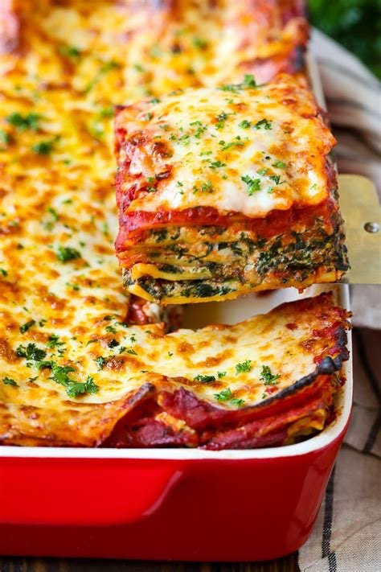

Lasagna

this lasagna will knock your socks off!
follow this recipe from the great Matty Matheson to find out if youre truely naughty or nice this christmas lol
For the Lasagna
- 1 tbsp canola oil
- 2 lbs. fresh chorizo sausage meat
- 1/2 cup tomato puree, divided
- 2 cup beef stock
- 2 cup ricotta
- 1 cup queso fresco
- 2 eggs
- 1 cup grated parmesan
- 1 tsp fresh ground pepper
- 6-20 uncooked lasagna noodles
- 2 cup grated mozzarella cheese
For the Salsa Verde
- 1 jalapeno, finely chopped
- 1/2 chopped cilantro
- 1/2 cup chopped mint
- 1/4 cup green onion, finely chopped
- 1 garlic clove, minced
- zest and juice of 1 lime
- 3/4 cup olive oil
- 1 tsp fresh ground pepper
- Heat canola oil in a large pan over medium-high.
- Crumble chorizo into the pan and cook until caramelized and fragrant, about 5 minutes.
- Add in 1 cup of the tomato puree and beef stock.
- Bring mixture to a boil then reduce heat to medium and simmer until mixture reduces into a thick sauce, about 30 minutes.
- Meanwhile, mix ricotta, queso fresco, and eggs in a large bowl.
- Stir until combined and smooth. Stir in parmesan cheese and pepper.
- Preheat oven to 350F.
- Spread a thin layer of the meat sauce in the bottom of a 13x9 inch pan.
- Cover the sauce with uncooked lasagna noodles, breaking them as needed to create a single layer.
- Dollop cheese mixture over noodles, then sprinkle mozzarella and 1/4 teaspoon dried oregano.
- Arrange another layer of noodles over cheese, then ladle meat sauce followed by cheese mixture, mozzarella, and oregano. Repeat 2 more times.
- Dollop remaining tomato puree over the top layer of mozzarella
- Bake in the preheated oven until edges are browning and the top layer is bubbling about 1 hour. Let rest for bout 15 minutes before serving.
- Meanwhile, make Salsa Verde by mixing all the ingredients in a small bowl. Stir to combine
- Serve lasagna sliced with salsa verde.